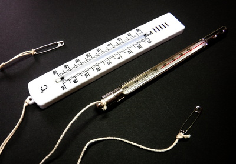
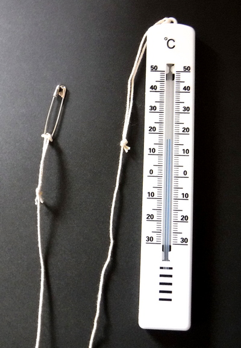
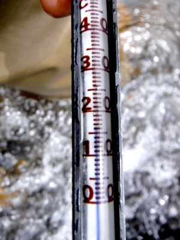
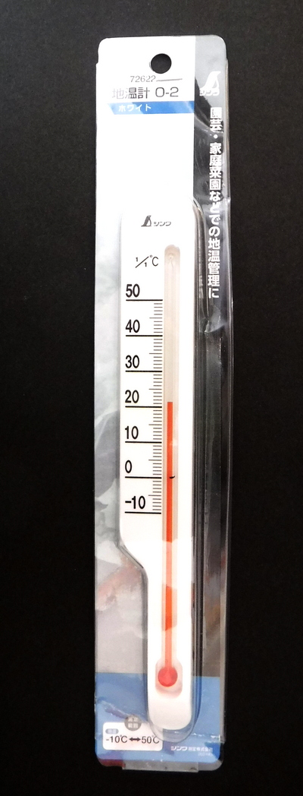

私のお気に入り
釣り道具 水温計（ダイソー、ハードストックにて購入）
水温計というものは、ロッドやリール、ラインの性能や構造、素材、あるいはヒットするフライやルアーの種類についての議論に比べれば、話題に上ることの少ないアイテムのような気がします。
しかし、渓流釣りに限らず、様々な場所で様々な魚を狙って釣りをする上では、必須のアイテムだと思います。現在では国土交通省のウェブサイトで、ほぼリアルタイムに観測所の雨量、河川の流量・水位などが分かるようになっていますが、水温はまだリアルタイムでの計測は行われていないようです。（僕が知らないだけかもしれませんが）
水温は、多くの魚類の活動に大きな影響を及ぼし、釣り人が手軽に測定できて客観的に判断できる唯一の数値データだということには異論は無いと思われます。今、実に久しぶりに本棚から古典的名著「上級者のためのトラウト・タクティクス ジョゼフ B．ハンフリーズ著 ティムコ刊 1983年初版発行」を引っ張り出してみたら、第１章の28ページが丸ごと「魚をみつけるーー温度の問題」として、水温と鱒との関連について割かれていました。なるほどと感心しきりだったので、少し引用してみます。
用意周到のアングラーといえどもその多くの人々が、何か知りたくないことを告げるものでもあるかのように、水温計を避けたがる。しかしこの５ドルで買える水温計は、今日手に入るどんな道具よりも、より多くのフィッシャーマンをよりよいフィッシャーマンに仕立て上げることのできるものだ。200ドルのフライロッドを使う最良のアングラーが、超リアリスティックなカゲロウのイミテーションを８Ｘのティペットで、花咲く木の枝に潜む５ポンド級のマスにキャストしても、水温が約26.7℃もあったのでは、そのマスを掛ける可能性はまずないだろう。それどころか、そんな水温では、川じゅうどこをさがしても、餌をとっている魚など見当たらないにちがいない。
同じ釣り場で年間を通じ、釣行のたびに測定を続け、記録を残し、集積してゆけば、将来の釣行時の有益な判断材料になるでしょう。また、初めての釣り場や、遠征時にも水温計があれば、それまで蓄積した知識と経験、対象魚の特性から、効果的な攻略法が短時間でつかめるかもしれません。
さらに、釣れなかった時には、
「ああ、今日は水温が○○度だからダメだわ.....」
などと言い訳が出来る効能もあります。(笑)
さて、釣り人が携行する水温計に求められる機能としては、
- 温度の目盛りが見やすいこと（特にシニア向けには）
- 丈夫なこと、川原の石の上に落としても壊れないこと
- 雨に濡れても、水没しても故障しないこと
- 軽いこと。ただでさえ荷物の多いダレかさんには必須条件です。
- コンパクトであること。これも上に同じ。
- 落下・忘れ物防止のために、リングが付いていたり、紐を結べる穴が付いていること。昔、有名ブランドの高価な水温計を川原に忘れてきてしまい、１月ほど泣いて暮らしました。
次に、現在ではどんな水温計が市販されているのかを見てみましょう。
昔ながらのガラスの温度計タイプ
○長所
・ガラス製の水温計をアルミなどの金属製ケースで包んでいるシンプルな構造。
●短所
・金属製ケースで保護されているため、やや、重い。
・値段が高い。800～3,000円程度（今の僕としては、けっこうな値段です） また落としたり、忘れてきたらショックが大き過ぎます。
デジタルタイプ
○長所
・手軽に迅速に水温が測定できる
・デジタル表示なので、読み取りが解りやすく正確である。
●短所
・やや、重そう。調べていないので詳しくはわかりませんが。
・値段が高い。2,000～3,000円程度！
・落としたら壊れそう。
非接触タイプ
○長所
・水面まで降りなくても表層水温が測れるそうです。
●短所
・値段がすごく高い！ 5,000円程度。僕としては信じられない高価格です。今大活躍しているアブのエントリークラスのスピニングリールとライン 100m を1巻きくらい買えます！
・落としたら壊れそう。
・やや、重そう。
・本体が大きい。
百円ショップのプラスチックケース入り水温計

○長所
・何と言っても、価格が安い！ 110円(税込み） コストパフォーマンス最高！！ 渓流・本流用のチェストパック、スリングバッグの計４個にそれぞれ装着してあるが、合計440円である！
・軽量で、それなりに丈夫そう。
・踏んだら折れるか割れると思われるが、落としたくらいでは大丈夫そうに見える。まぁ、壊れたとしても、110円なのだから。
・たこ糸を通す穴が付いている。安全ピンを反対側に結んでチェストパックなどに結わえている。あるいは、金属製リングも通りそう。
・温度を示す液体（水銀？） の青い色が見やすい

・目盛りが両側に明瞭に印字されており見やすい。読み取り精度は、がんばっても 0.5℃ であるが、釣りには十分であろう。
●短所
やや幅が広い。実測で 26mm ほど。でも軽くて薄いのでさほど気にならない。
デジタル式や非接触式であれば、速やかに測定できるそうですが、水温計を取り出し、たこ糸を伸ばして流れに浸し、はやる心を抑えながら川面や水中を観察して、数分間をじっと待つのも、僕の釣りの重要なひとときとなっています。
最後に、デジカメやスマホで、水温を測った場所と、水温計の目盛りを接写しておくと、釣行後の記録整理が楽になります。

追記
先日、ふとしたことから東海地方にあるDIYショップ系の「ハードストック」という店に寄ったら、「ダイソー」で売っていたような、安価な水温計を売っていたので、スペアとして買ってしまいました。もう何本も持っているのですが、最近ダイソーでは、上記の写真のタイプが店頭から消えてしまったので、念のために買っておいた次第です。
「ハードストック」のプラスチックケース入り水温計（地温計）

この地温計は、シンワ測定株式会社というメーカーの「製品コード：72622」です。実売価格は税込み 208円でした。仕様は、
・精度 ±1℃
・測定範囲 -10～50℃
・1目盛 1℃
・本体サイズ 190×25×7mm
・製品質量 20g
・材質 本体：ポリスチレン樹脂
でした。
温度を示す赤色の液体（取扱説明書には、着色精製白灯油と記してある）が、白地のボディにコントラストが鮮やかで、見やすいのが嬉しいです。
さらに、このメーカーからは、金属ケース 棒状温度計 15cm用 製品コード：72731という製品も発売されており、希望小売価格は、850円(税別)、実売価格は600円ほどとなっています。フライフィッシング用品のお店で買うよりはずっとお値打ちですね。（業界関連の方々、ゴメンナサイ）
私のお気に入り 目次へ
サイトマップ
ホームへ
お問い合わせ